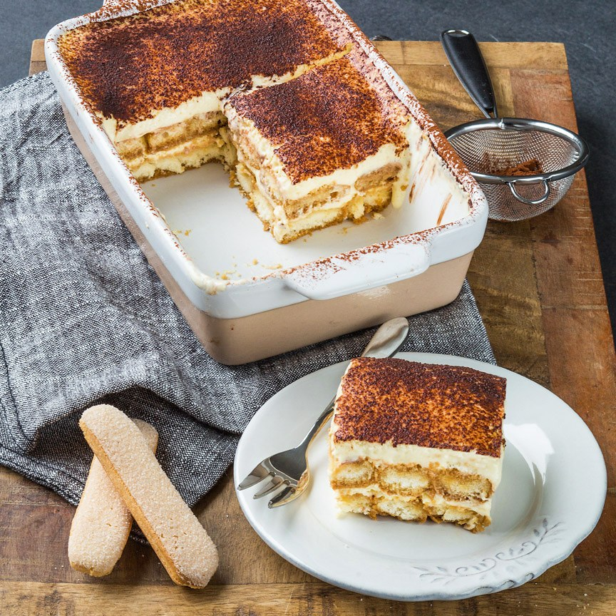

Tiramisu
Het basisrecept voor klassieke tiramisu! Makkelijk en snel te maken en een ideaal dessert om van tevoren te bereiden.
Ingrediënten
- 3 verse eieren
- 40 gr suiker
- 250 gr mascarpone
- 20 lange vingers
- 1 kopje sterke koffie (afgekoeld)
- 3 eetlepels cacaopoeder
- Scheutje marsala wijn (slijterij)
Benodigdheden
- Mixer
- Schaal ca. 20 x 14 cm
- Klein zeefje
Bereidingswijze
- Splits de eieren. Zorg er voor dat er absoluut geen eigeel bij het eiwit komt. Mix de eigelen met de suiker in een paar minuten tot een licht geel en luchtig mengsel. Mix de mascarpone er door. Maak de mixer en kom goed schoon en vetvrij en klop daarna de eiwitten helemaal stijf. Spatel het eiwit door het mascarpone mengsel.
- Roer de wijn door de koffie in een kommetje of diep bord. Doop de helft van de lange vingers hier een paar seconden in en verdeel over de bodem van de schaal (met de gesuikerde kant naar beneden). Giet ongeveer de helft van het mengsel hierover heen.
- Doop de rest van de lange vingers in de koffie en verdeel weer over de schaal. Giet het laatste deel van het mengsel er over.
- Strooi er wat cacao over en zet in de koelkast. Geef de tiramisu de tijd om goed op te stijven, het liefst een hele nacht.
- Vervang de eieren door 200 ml opgeklopte slagroom voor een variant zonder ei.
- Vervang de marsala wijn ook eens door Amaretto, Licor 43 of Baileys

Tip Let op, in dit recept worden rauwe eieren gebruikt. Dit kan gevaarlijk zijn voor oudere of zwakkere mensen en is niet geschikt voor zwangere vrouwen.